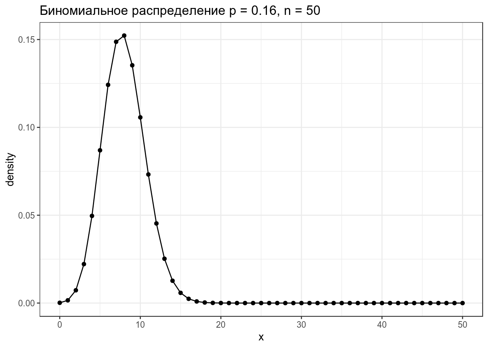
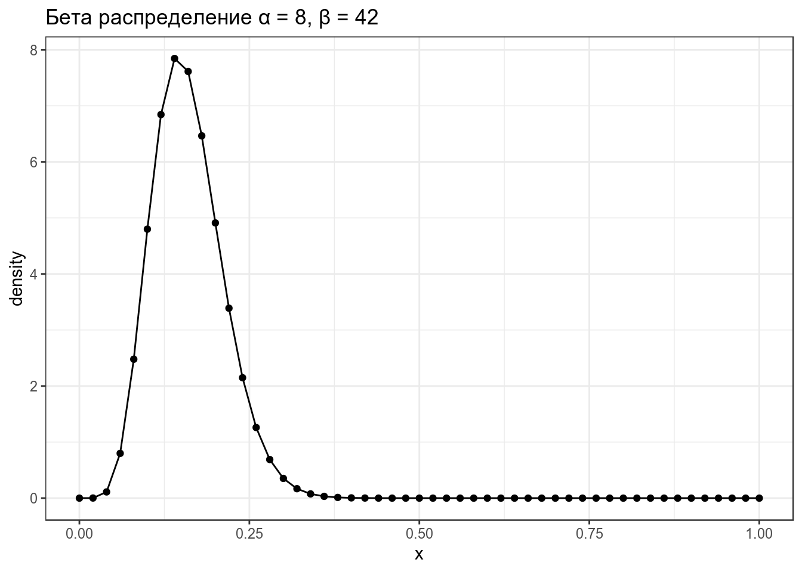
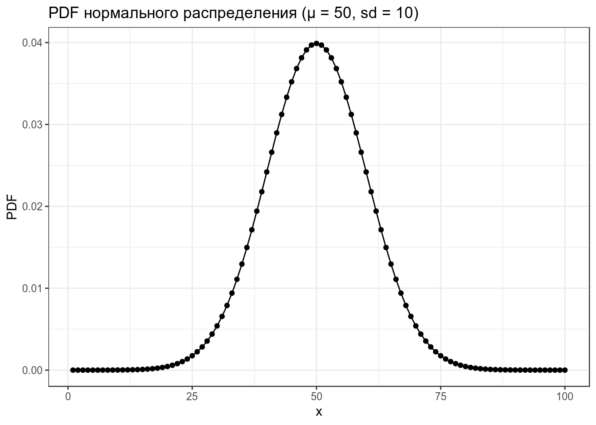
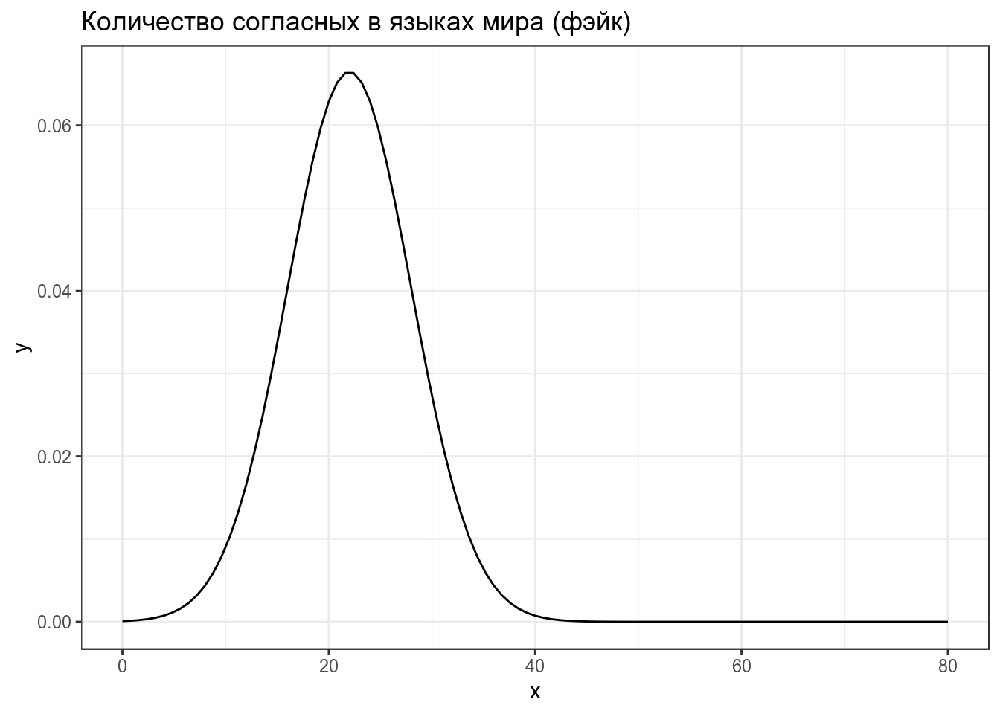
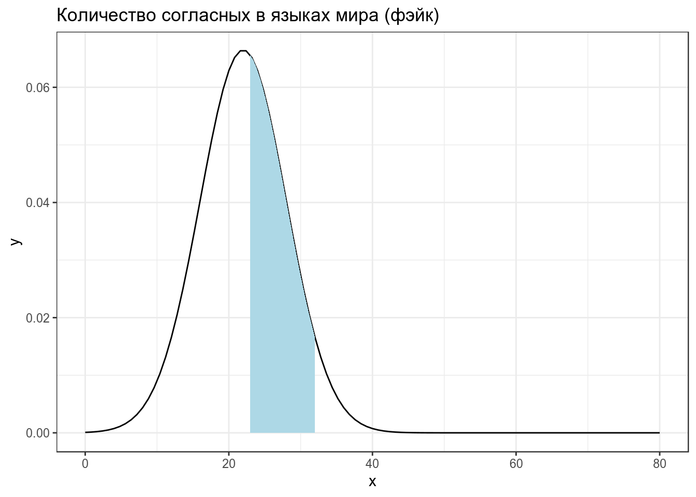
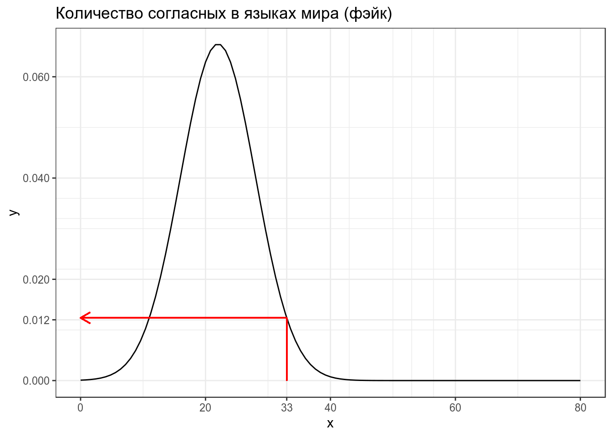
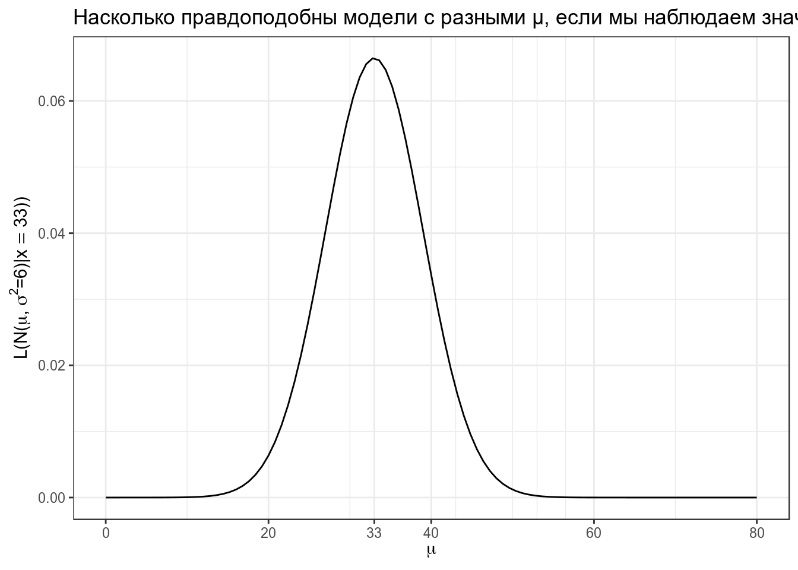
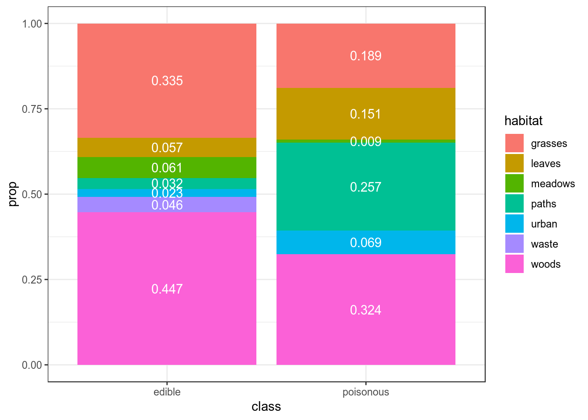

6. Функция правдоподобия, формула Байеса
library(tidyverse)1. Немного распределений
1.1 Биномиальное распределение
Биномиальное распределение — распределение количетсва успехов эксперементов Бернулли из n попыток с вероятностью успеха p.
\[P(k | n, p) = \frac{n!}{k!(n-k)!} \times p^k \times (1-p)^{n-k} = {n \choose k} \times p^k \times (1-p)^{n-k}\] \[ 0 \leq p \leq 1; n, k > 0\]
data_frame(x = 0:50,
density = dbinom(x = x, size = 50, prob = 0.16)) %>%
ggplot(aes(x, density))+
geom_point()+
geom_line()+
labs(title = "Биномиальное распределение p = 0.16, n = 50")
1.2 Бета распределение
\[P(x; α, β) = \frac{x^{α-1}\times (1-x)^{β-1}}{B(α, β)}; 0 \leq x \leq 1; α, β > 0\]
Бета функция:
\[Β(α, β) = \frac{Γ(α)\times Γ(β)}{Γ(α+β)} = \frac{(α-1)!(β-1)!}{(α+β-1)!} \]
data_frame(x = seq(0, 1, length.out = 51),
density = dbeta(x = x, shape1 = 8, shape2 = 42)) %>%
ggplot(aes(x, density))+
geom_point()+
geom_line()+
labs(title = "Бета распределение α = 8, β = 42")
Можно поиграть с разными параметрами:
shiny::runGitHub("agricolamz/beta_distribution_shiny") \[\mu = \frac{\alpha}{\alpha+\beta}\]
\[\sigma = \frac{\alpha\times\beta}{(\alpha+\beta)^2\times(\alpha+\beta+1)}\]
1.3 Нормальное распределение
\[P(x) = \frac{1}{\sigma\sqrt{2\pi}}\times e^{-\frac{\left(x-\mu\right)^2}{2\sigma^2}}\]
\[\mu \in \mathbb{R}; \sigma^2 > 0\]
data_frame(x = 1:100,
PDF = dnorm(x = x, mean = 50, sd = 10)) %>%
ggplot(aes(x, PDF))+
geom_point()+
geom_line()+
labs(title = "PDF нормального распределения (μ = 50, sd = 10)")
2. Вероятность vs. функция правдободобия
Предположим что распределение количества согласных в языках мира можно описать нормальным распределением со средним 22 и стандартным отклонением 6:

Тогда вероятность того, что в выбранных произвольно языках окажется от 23 до 32 согласных, равна интегралу нормального распределения в указанном промежутке:

\[P\left(X \in (23,\, 32) | X \sim \mathcal{N}(\mu = 22,\, \sigma^{2}=6)\right) = ...\]
pnorm(32, mean = 22, sd = 6) - pnorm(23, mean = 22, sd = 6)## [1] 0.3860258Когда мы говорим про функцию правдоподобия, мы нашли еще один язык в котором оказалось 33 согласных, и нас интересует, насколько правдоподобна функция нормального распределения со средним 22 и стандартным отклонением 6 при значении переменной 33. Это значение равно функции плотности:

\[L\left(X \sim \mathcal{N}(\mu = 22,\, \sigma^{2}=6)|x = 33\right) = ...\]
dnorm(33, 22, 6)## [1] 0.01238519В результате мы можем пострить график, на котором будет правдоподобие моделей с разными средними и фиксированным стандартным отклонением.
data_frame(x = 0:80) %>%
ggplot(aes(x)) +
stat_function(fun = function(x) dnorm(33, x, 6))+
scale_x_continuous(breaks = c(0:4*20, 33))+
labs(x = TeX("$\\mu$"),
y = TeX("$L(N(\\mu,\\, \\sigma^{2}=6)|x = 33))$"),
title = "Насколько правдоподобны модели с разными μ, если мы наблюдаем значение 33?")
А что если у нас не одно наблюдение, а несколько? Например, мы наблюдаем языки с 33 и 26 согласными? События независимы друг от друга, значит, мы можем перемножить получаемые вероятности.
data_frame(x = 0:80) %>%
ggplot(aes(x)) +
stat_function(fun = function(x) dnorm(33, x, 6)*dnorm(26, x, 6))+
scale_x_continuous(breaks = c(0:4*20, 33, 26))+
labs(x = TeX("$\\mu$"),
y = TeX("$L(N(\\mu,\\, \\sigma^{2}=6)|x = 33))$"),
title = "Насколько правдоподобны модели с разными μ, если мы наблюдаем значения 26 и 33?")
Самое важное:
- вероятность — P(data|distribution)
- правдоподобие — L(distribution|data)
Интеграл распределения вероятностей равен 1. Интеграл правдоподобия может быть не равен 1.
2.1
Посчитайте значение правдоподобия модели \(\mathcal{N}(\mu = 910,\, \sigma^{2}=150)\) для встроенного датасета Nile.
3. Байесовский статистический вывод
3.1 Формула Байеса
\[p(A|B) = \frac{p(A, B)}{p(B)}\Rightarrow p(A|B) \times p(B) = p(A, B)\] \[p(B|A) = \frac{p(B, A)}{p(A)}\Rightarrow p(B|A) \times p(A) = p(B, A)\] \[p(A|B) \times p(B) = p(B|A) \times p(A)\] \[p(A|B) = \frac{p(B|A)p(A)}{p(B)}\]
Дискретный случай: \[p(A|B) = \frac{p(B|A)p(A)}{\sum_{i=1}^{n} p(B, a_i) \times p(a_i)}\]
Непрерывный случай: \[p(A|B) = \frac{p(B|A)p(A)}{\int p(B, a) \times p(a)da}\]
Некоторым помогает вот такое объяснение:

3.2 Байесовский статистический вывод
В байесовском подоходе статистический вывод описывается формулой Байеса
\[P(θ|Data) = \frac{P(Data|θ)\times P(θ)}{P(Data)}\]
- \(P(θ|Data)\) — апостериорная вероятность (posterior)
- \(P(Data|θ)\) — функция правдоподобия (likelihood)
- \(P(θ)\) — априорная вероятность (prior)
- \(P(Data)\) — нормализующий делитель
В литературе можно еще встретить такую нотацию:
\[P(θ|Data) \propto P(Data|θ)\times P(θ)\]
3.3 Первый пример с категориальными данными
В датасете c грибами (взят c kaggle) представлено следующее распределение по месту обитания:
df <- read_csv("https://github.com/agricolamz/2019_BayesDan_winter/blob/master/datasets/mushrooms.csv?raw=true")## Parsed with column specification:
## cols(
## .default = col_character(),
## ring_number = col_double()
## )## See spec(...) for full column specifications.df %>%
count(class, habitat) %>%
group_by(class) %>%
mutate(prop = n/sum(n)) %>%
ggplot(aes(class, prop, fill = habitat, label = round(prop, 3)))+
geom_col()+
geom_text(position = position_stack(vjust = 0.5), color = "white")
Мы нашли некоторый новый вид грибов на лужайке (grasses). Какой это может быть гриб: съедобный или ядовитый? У нас нет никаких идей, почему бы нам отдать предпочтения той или иной гипотезе, так что будем использовать неинформативное априорное распределение:
data_frame(model = c("edible", "poisonous"),
prior = 0.5,
likelihood = c(0.335, 0.189),
product = prior*likelihood,
posterior = product/sum(product))## # A tibble: 2 x 5
## model prior likelihood product posterior
## <chr> <dbl> <dbl> <dbl> <dbl>
## 1 edible 0.5 0.335 0.168 0.639
## 2 poisonous 0.5 0.189 0.0945 0.361Вот мы и сделали байесовский апдейт. Теперь апостериорное распределение, которые мы получили на предыдущем шаге, мы можем использовать в новом апдейте. Допустим, мы опять нашли этот же вид гриба, но в этот раз в лесу (woods).
data_frame(model = c("edible", "poisonous"),
prior_2 = c(0.639, 0.361),
likelihood_2 = c(0.447, 0.324),
product_2 = prior_2*likelihood_2,
posterior_2 = product_2/sum(product_2))## # A tibble: 2 x 5
## model prior_2 likelihood_2 product_2 posterior_2
## <chr> <dbl> <dbl> <dbl> <dbl>
## 1 edible 0.639 0.447 0.286 0.709
## 2 poisonous 0.361 0.324 0.117 0.2914. Домашняя работа
4.1
Вашего друга похитили а на почту отправили датасет, в котором записаны данные о погоде из пяти городов. Ваш телефон зазвонил, и друг сказал, что не знает куда его похитили, но за окном легкий дождь (Rain). А на следующий день — сильный дождь (Rain, Thunderstorm). Сделайте байесовский апдейт и предположите, в какой город вероятнее всего похитили друга (форма принимает латиницу).